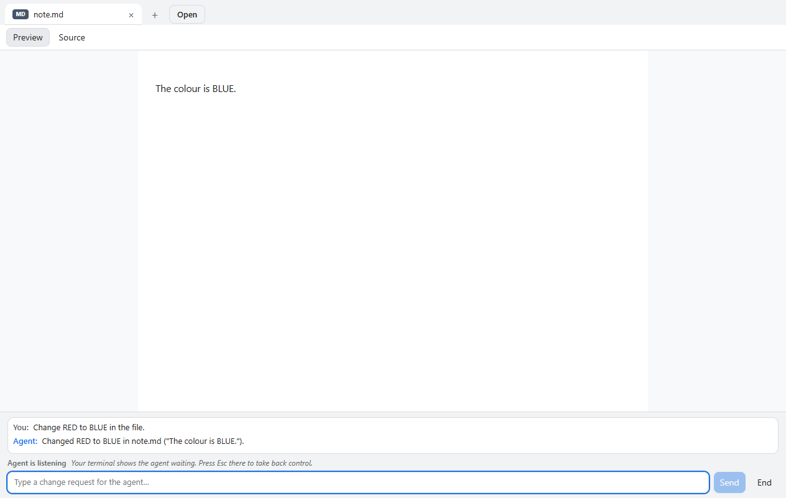
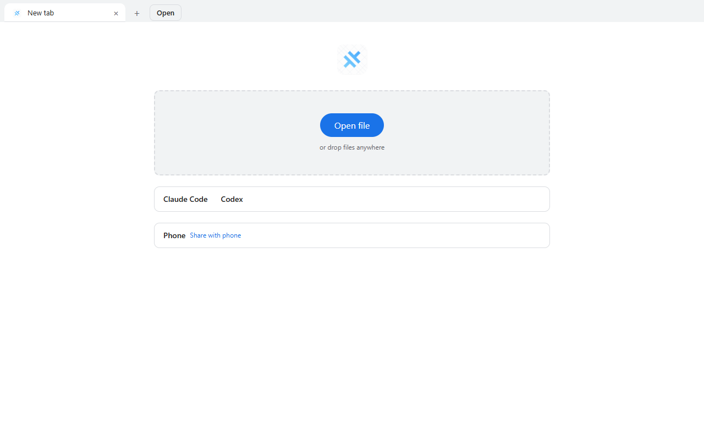
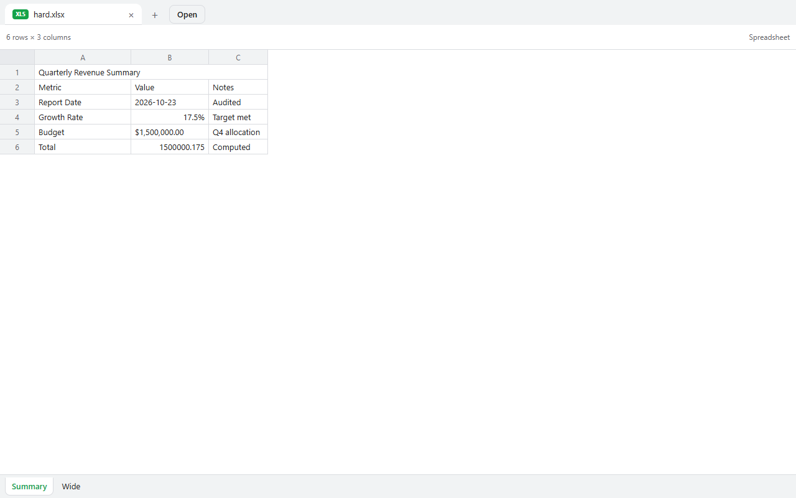
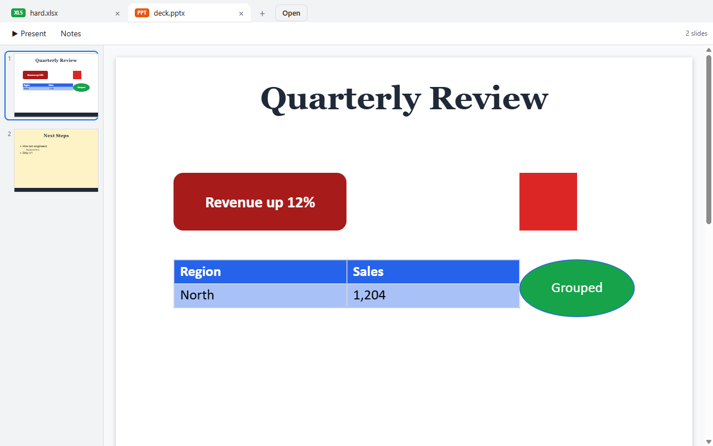

Connect beside Claude Code
Click Connect beside Claude Code in UniView.
Free, private file viewer for Windows. PDF, Word, Excel, PowerPoint and more, offline, with no account. Documents from Claude Code open in UniView, and you request changes from inside the app.
The app is unsigned, so Windows shows a warning. Click More info, then Run anyway. Verify checksum

MADE FOR THE FILES YOU WORK WITH
PDF, Word, Excel and PowerPoint files, images, code and more, in one offline viewer.



Claude Code is supported today. Codex is a preview, not yet tested end to end.
Click Connect beside Claude Code in UniView.
Ask Claude Code to show you a document, and it opens in UniView.
Type your change in the bar under the document, and the agent edits the file and the tab reloads.
Needs the Android app, which you build from source for now. There is no download yet.
Your computer’s files, ready on your phone. Open a document or stream a video directly over your own Wi-Fi, only when you turn sharing on.
Pair your devices, choose the folders to share, and browse them directly. Large videos stream as you watch.
macOS and iOS: build from source, not tested for release.
Less time searching for the right app. More time getting to what matters.
From documents and books to code and archives, UniView brings your files together in one place.
Open files in tabs, switch between them, and find recent work in an interface that feels natural.
Your files stay on your device. No account or telemetry, and no cloud upload required to view them.
Give your coding agents a place to show their work. UniView opens files and structured views, then brings review requests to you for a clear decision.
Explore agent integrationWhether it’s a report, a photo, a slide deck, or a line of code, there’s room for it here.
See how to get startedOpen local files without an account or a cloud upload. When you connect your devices, they talk directly over your local network, and only while you have sharing turned on.
Sharing with a phone is local Wi-Fi only. The AI agent you connect runs under your own account, so what it sends is between you and that provider.
Read about privacyYour documents are rendered on the device. No account, no telemetry, and it works offline.
Only selected folders are accessible to paired devices. Access is read only.
Stop sharing, remove a paired device, or revoke an enrolled agent from the app.
No. You can open local files without signing in. Device pairing also works without an account.
UniView is a viewer. Editing and annotation are not currently supported.
Device browsing works on the same local network. It does not use a cloud relay or provide remote internet access.
Claude Code is supported. Codex is a preview, not yet tested end to end.
UniView connects to external coding agents through MCP or the CLI. It displays their work and provides a human review workspace.
Approval and change requests are made in the desktop app on your computer. The Android app that browses a shared computer over Wi-Fi has no download yet.
Supported formats have limits. For example, PowerPoint charts and diagrams use placeholders, and password-protected PDFs are not supported. Text and hex fallbacks are available when a file cannot be rendered.
UniView brings a familiar, focused home to the files you already have.
Free · v1.0.0 · Windows installer only. Android is not available as a download yet: you can build it from source. macOS and iOS: build from source, not tested for release.
The app is unsigned, so Windows shows a warning. Click More info, then Run anyway. Verify checksum